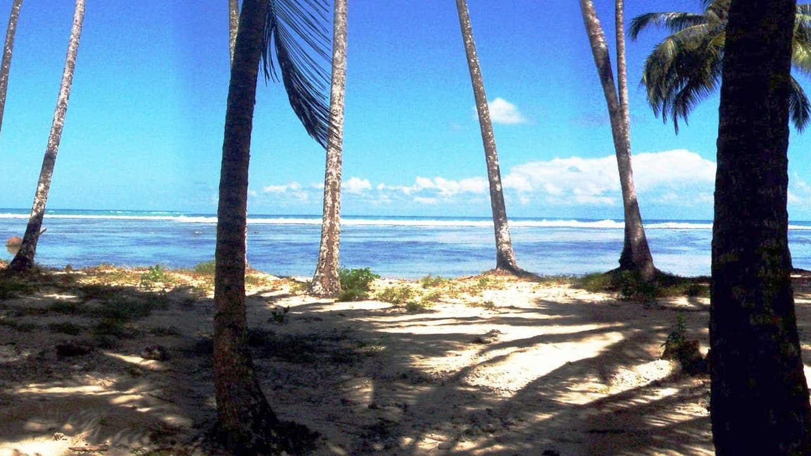

Lagundri Bay — Nias
Indonésie · surf

Une droite de récif d’une régularité rare, dans une baie ouverte à la houle de l’océan Indien. Un tube long et lisible, mais sur un platier corallien très peu profond.
- Lieu
- Indonésie
- Niveau
- Expert
- Activités
- surf
- Type d'eau
- Mer / océan
- Coordonnées
- 0.58, 97.75 (position approximative du secteur)
Dangers à connaître
- Corail affleurant, blessures fréquentes.
- Section de bowl très creuse à la fin.
- Île isolée, secours médicaux éloignés.
Le conseil d'Ocean Buddy
Chaussons de récif et trousse de soin : ici, une coupure de corail s’infecte vite.
Ouvrir dans Ocean Buddy Télécharger sur l'App Store
Source : Description historique Ocean Buddy · vérification externe en attente.